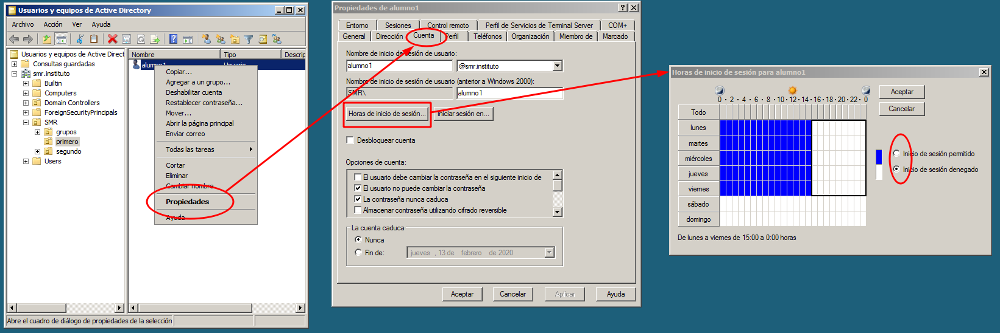

Además de las directivas de grupo y de las directivas de seguridad, tenemos otros mecanismos que permiten imponer restricciones a los usuarios.
Restricción de inicio de sesión
Podemos restringir las horas a las que un usuario puede iniciar sesión en el sistema. Por ejemplo, supongamos que no que queremos que los alumnos puedan iniciar sesión por la tarde, ni los fines de semana. Para restringir esta posibilidad vamos a usuarios y equipos de Active Directory, buscamos el usuario y hacemos los siguiente: 